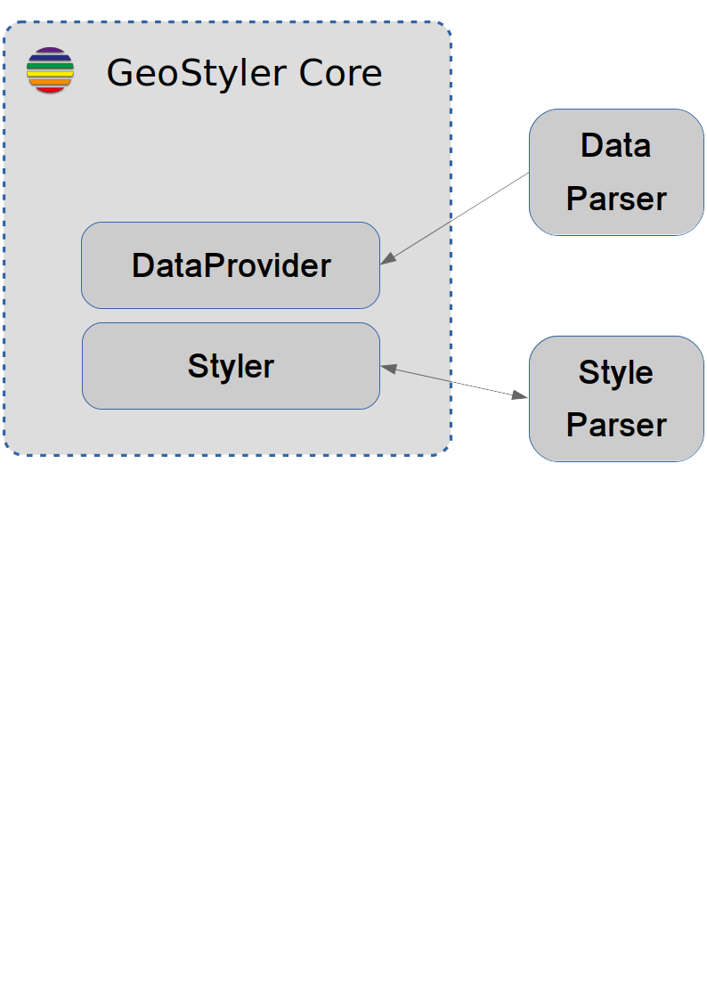
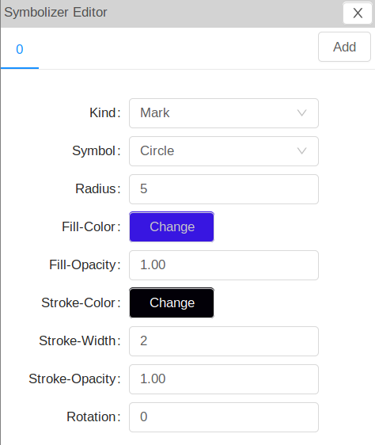
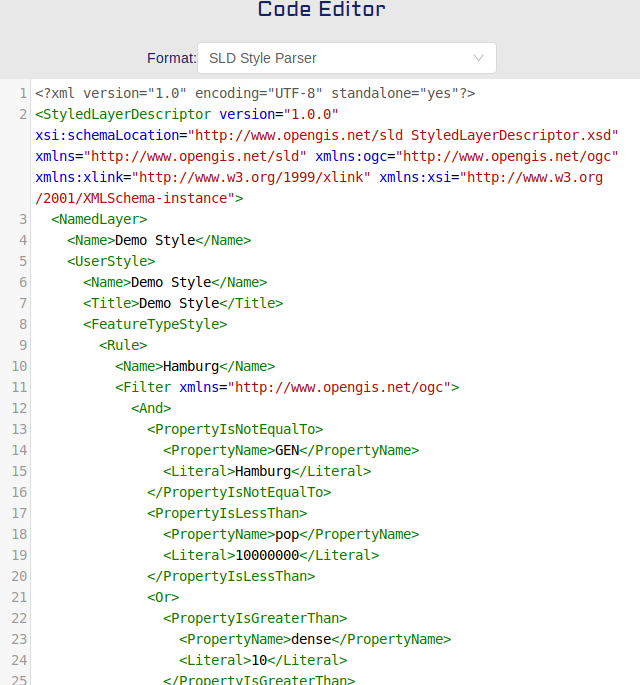
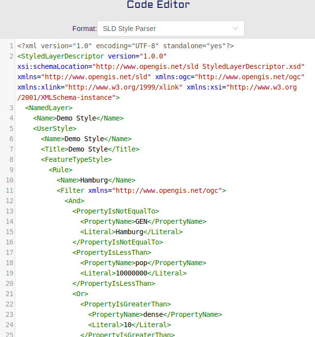

GeoStyler
Ein generischer grafischer Stileditor für Geodaten
Jan Suleiman, terrestris GmbH & Co. KG Christian Mayer, meggsimum - Büro für Geoinformatik
FOSSGIS 2019, Dresden, 14.03.2019
Gliederung
- Über…
- GeoStyler
- Architektur
- Features
- Beispiele
- Ausblick
Jan Suleiman

- B. Sc. Geoinformatik
- Developer @terrestris
- Kernentwickler GeoStyler
- Studentische Hilfskraft
terrestris
- terrestris.de
- OpenSource GIS aus Bonn
- Entwicklung, Projekte & Support/Schulung
- Beratung, Planung, Implementierung & Wartung
Teil des Teams werden?
- Softwareentwickler/in
- GIS Consultant
- Praktikanten / betreute Abschlussarbeiten
Details gerne am terrestris Stand
Christian Mayer

- Geoinformatiker
- Softwareentwickler & -architekt
- Kernentwickler und PSC Mitglied GeoExt
- Sprecher & Trainer
national & international - OSGeo Foundation Charter Member
meggsimum
- meggsimum.de
- Dienstleistungen im Bereich GIS, Webmapping & GDI
- Maßgeschneiderte WebGIS-Lösungen
- Softwarekonzepte und Softwareentwicklung
- Geodaten
- Beratung und Schulung
GeoStyler
Motivation
Das kartographische Stylen von Geodaten im Web ist seit Jahren ein wiederkehrendes Thema...
GeoStyler
Gebrauchsfertige Map Styling Bibliothek- Open Source (BSD)
- ES6 & TypeScript
- React
- ant-design
GeoStyler
Gebrauchsfertige Map Styling Bibliothek- Komponenten basiert
- Stilformat unabhängig
- Datenformat unabhängig
- Framework unabhängig
- Vollständig anpassbar
Architektur
- Micro Packages
- UI-Komponenten
- Stil Definition
- Stilparser
- Datenparser
GeoStyler Core
UI-Komponenten

 

GeoStyler Core
Stil Definition
- Ein JSON-Objekt pro Stil
- Regelbasierte Stile
- Inspiriert durch SLD und Mapbox
- Typisiert
- Lingua Franca d. GeoStylers
{
"name": "Demo Style",
"rules": [
{
"name": "Rule 1",
"symbolizers": [
{
"kind": "Mark",
"color": "#0E1058",
"wellKnownName": "Triangle"
}
]
}
]
}
GeoStyler Parser

Entwicklung & Integration eigener Parser möglich
GeoStyler - Features
- Regelbasierte Stile (incl. Symbolizer)
- Einfache bis komplexe Komponenten
- Previews der Stile
- Klassifikationen
- ScaleDenominator & komplexe Filter
- Berechnung überschneidender Regeln
GeoStyler - Features
- Einbindung in bestehende Web(GIS) Projekte
- Nutzung ohne UI-Komponenten
- Verschiedene Layouts
- i18n
Installation
$ npm i geostyler
$ npm i geostyler-style
$ npm i geostyler-data
$ npm i geostyler-sld-parser
$ npm i geostyler-openlayers-parser
$ npm i geostyler-qgis-parser (*)
$ npm i geostyler-mapbox-parser (*)
$ npm i geostyler-wfs-parser
$ npm i geostyler-geojson-parser
(*) Release ausstehend
Beispiele
<Editor
symbolizer={symbolizer}
onSymbolizerChange={this.onSymbolizerChange}
iconLibraries={iconLibraries}
/>
Platzhalter default Editor
Beispiele
Platzhalter customized EditorBeispiele

Beispiele Applikationen

Beispiele Applikationen

Ausblick
- Weitere UI-Komponenten
- Weitere Stilparser
- Unterstützung FontIcons
- Unterstützung Rasterdaten
- GeoServer Plugin
Vielen Dank
Fragen & Anmerkungen?
Impressum
Autoren
Christian Mayer
meggsimum - Büro für Geoinformatik
Schillerstraße 2a
67112 Mutterstadt
chris@meggsimum.de
meggsimum - Büro für Geoinformatik
Schillerstraße 2a
67112 Mutterstadt
chris@meggsimum.de
Jan Suleiman
terrestris GmbH & Co. KG
Kölnstr. 99
53111 Bonn
suleiman@terrestris.de
terrestris GmbH & Co. KG
Kölnstr. 99
53111 Bonn
suleiman@terrestris.de
Lizenz
Diese Folien sind unter CC BY-SA veröffentlicht.